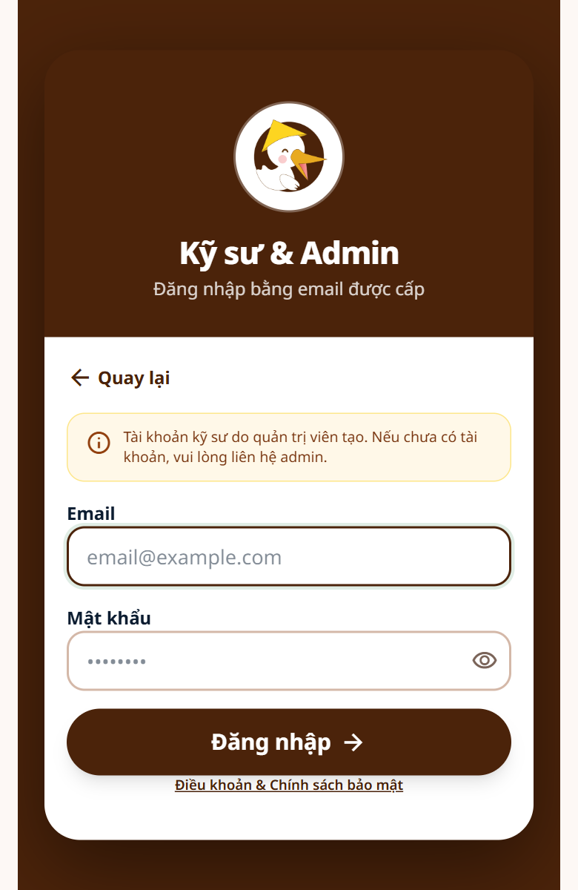
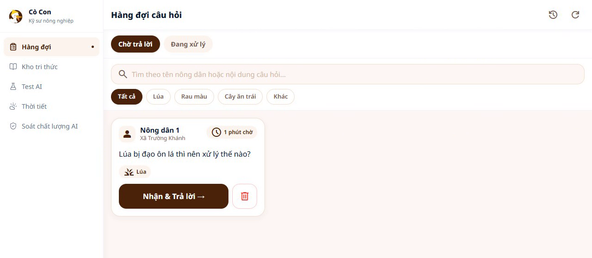
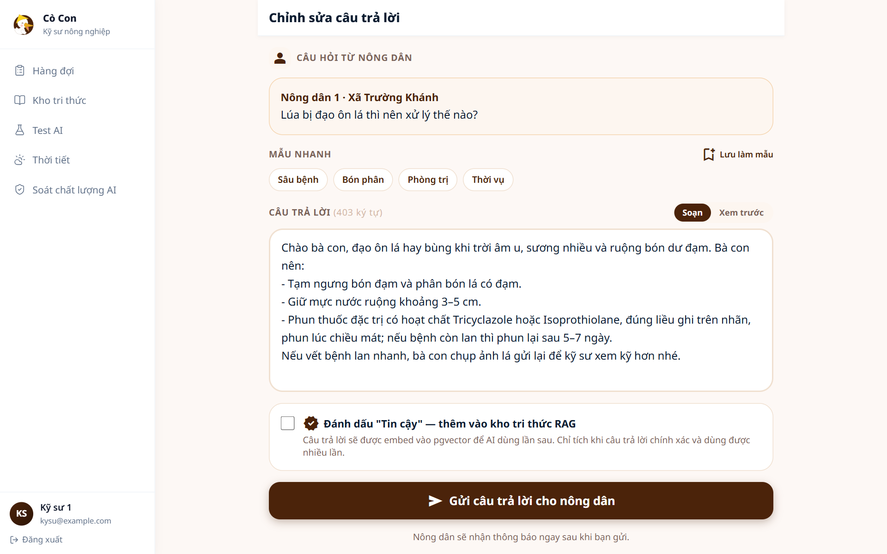
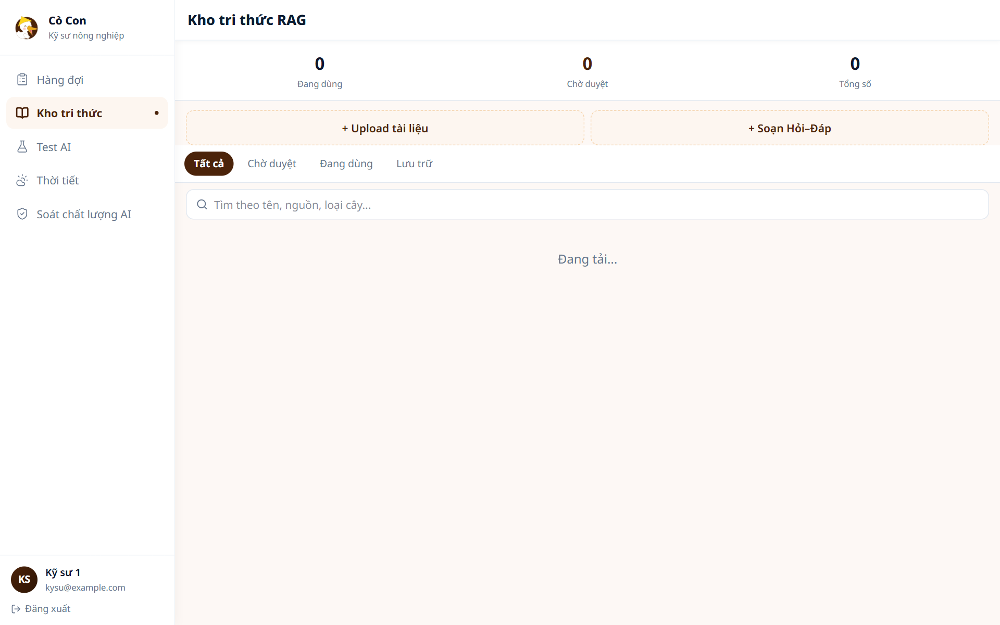

Hướng dẫn dùng app Cò Con — DÀNH CHO KỸ SƯ
Kỹ sư là người trả lời các câu hỏi khó mà AI chuyển sang, và bổ sung kiến thức cho AI. Giao diện kỹ sư dùng tốt nhất trên máy tính (có thanh menu bên trái); trên điện thoại có thanh dưới + nút Menu.
Mục lục
- Đăng nhập
- Trả lời câu hỏi (quy trình chính)
- Kho tri thức — dạy cho AI
- Test AI
- Soát chất lượng AI
- Lưu ý vận hành
- Hỏi đáp nhanh (FAQ)
1. Đăng nhập
- Mở app → chọn vai trò "Kỹ sư / Admin".
- Đăng nhập bằng email + mật khẩu do admin cấp.
- Chưa có tài khoản? → Liên hệ admin để được tạo. Màn hình đăng nhập không hỗ trợ tự đăng ký tài khoản nhân sự.
- Sau khi đăng nhập, vào thẳng màn hình Hàng đợi câu hỏi.
Thanh menu kỹ sư gồm: Hàng đợi · Kho tri thức · Test AI · Thời tiết · Soát chất lượng AI.

2. Trả lời câu hỏi (quy trình chính)
2.1. Đọc hàng đợi
Vào Hàng đợi. Có 2 tab:
- Chờ trả lời: câu chưa ai nhận.
- Đang xử lý: câu đã có kỹ sư nhận. Mỗi thẻ ghi rõ "Bạn đang xử lý" hoặc "KS. [tên] đang xử lý".
Mỗi thẻ hiển thị: tên nông dân, ấp/xã, nội dung, ảnh (nếu có), loại cây, mức AI tin cậy %, và thời gian chờ:
- < 30 phút (nâu) · > 30 phút (vàng) · > 60 phút (đỏ — ưu tiên xử lý trước).
Hàng đợi tự cập nhật theo thời gian thực (có câu mới là hiện ngay); cũng có nút tải lại (refresh) và lịch sử (các câu đã trả lời).
Có thể tìm theo tên nông dân/nội dung và lọc theo cây trồng (Lúa / Rau màu / Cây ăn trái / Khác).
2.2. Nhận và trả lời
- Bấm "Nhận & Trả lời →" để nhận câu. Sau đó câu chuyển sang tab "Đang xử lý" mang tên bạn.
- Nếu kỹ sư khác vừa nhận trước, app báo "Không thể nhận câu hỏi này" và làm mới danh sách — chọn câu khác.
- Câu của chính bạn đang xử lý → nút là "Tiếp tục trả lời →".
- Ở màn Trả lời & Kiểm duyệt:
- Đọc kỹ câu hỏi + ảnh (bấm ảnh để phóng to).
- Mẫu nhanh: bấm Sâu bệnh / Bón phân / Phòng trị / Thời vụ để chèn khung trả lời rồi điền vào chỗ
[...].
- Gõ câu trả lời chi tiết, dễ hiểu. Có bộ đếm ký tự; tối thiểu 20 ký tự mới gửi được.
- Gạt "Xem trước" để thấy đúng những gì nông dân sẽ đọc; gạt "Soạn" để sửa tiếp.
- Tùy chọn quan trọng — "Đánh dấu Tin cậy — thêm vào kho tri thức RAG":
- Tích nếu câu trả lời chính xác và dùng lại được nhiều lần → embed vào pgvector, AI tự trả câu tương tự sau này.
- Không tích nếu chỉ đúng cho trường hợp riêng lẻ.
- Bấm "Gửi câu trả lời cho nông dân". Nông dân có thể xem câu trả lời trong cuộc hội thoại; thông báo đẩy phụ thuộc vào thiết bị và kết nối.
2.3. Mẹo & lưu ý
- Lưu mẫu riêng: gõ xong (≥20 ký tự) → "Lưu làm mẫu" → đặt tên (vd "Đạo ôn"). Mẫu của bạn hiện cạnh mẫu mặc định, xóa được.
- Lỡ thoát/F5: có thể mở lại câu hỏi từ Hàng đợi hoặc Lịch sử, nhưng nội dung chưa gửi không được tự động lưu. Hãy lưu riêng nội dung dài trước khi rời trang.
- Sửa câu đã gửi: vào Lịch sử → mở câu (trạng thái đã trả lời) → màn đổi tên "Chỉnh sửa câu trả lời".
- Xóa câu khỏi hàng đợi (nút thùng rác): chỉ khi câu không hợp lệ/trùng — nông dân sẽ KHÔNG nhận được trả lời, nên cân nhắc; có hỏi xác nhận.


3. Kho tri thức — dạy cho AI
Vào Kho tri thức RAG. Đầu trang có bộ đếm: số tài liệu Đang dùng / Chờ duyệt / Tổng số. Lọc theo tab Chờ duyệt · Đang dùng · Lưu trữ.
3.1. Hai cách thêm kiến thức
Cách A — Upload tài liệu (file dài):
- Bấm "Upload tài liệu mới" → chọn file PDF / DOCX / TXT (tối đa 20 MB) → đặt Tên tài liệu → chọn ít nhất một cây trồng áp dụng → Upload. Có thể điền nguồn tài liệu.
Cách B — Soạn cặp Hỏi–Đáp chuẩn (nhanh, cho 1 câu cụ thể):
- Bấm "Soạn cặp Hỏi–Đáp chuẩn" → nhập Câu hỏi + Câu trả lời đúng → Lưu; hệ thống bắt đầu embed. Dùng khi bạn muốn AI trả thẳng một câu hay gặp.
3.2. Vòng đời tài liệu (trạng thái)
| Trạng thái | Ý nghĩa | Việc làm được |
|---|
| Chờ duyệt | Vừa upload, AI chưa dùng | Bấm Xem đọc nội dung → "Duyệt & Embed vào RAG"; hoặc Xóa |
| Đang embed ⏳ | Hệ thống đang nạp vào AI | Chờ (tự cập nhật) |
| Đang dùng | AI đã dùng để trả lời | Có thể Lưu trữ để ngừng dùng |
| Lưu trữ | Ngừng dùng trong RAG | — |
Xóa chỉ áp dụng cho tài liệu Chờ duyệt / Đang embed. Tài liệu Đang dùng phải Lưu trữ trước. Xóa là vĩnh viễn, không hoàn tác.
Tài liệu càng tốt, AI trả lời càng chuẩn. Đây là cách chính để làm AI thông minh hơn.

4. Test AI
Vào Test AI để thử xem AI trả lời thế nào trước khi nông dân hỏi:
- Gõ câu hỏi mẫu → xem câu trả lời + độ tin cậy %.
- Đây là chế độ thử, không tạo hàng đợi thật, không ảnh hưởng nông dân.
- Dùng để kiểm tra: nếu AI trả lời yếu/sai → biết cần bổ sung tài liệu gì vào Kho tri thức.
5. Soát chất lượng AI
Vào Soát chất lượng AI để rà soát các câu AI đã trả lời trong 30 ngày và cải thiện. Mỗi thẻ hiện: độ tin cậy %, nguồn (QA biên soạn / RAG / Ảnh / Xã giao), số 👍 nông dân khen.
Bộ lọc: Tất cả · 👍 Được khen · Tin cậy thấp (<50%) · Trung bình (50–70%).
Hai việc chính:
- Câu sai / yếu → bấm "Sai? Soạn câu trả lời đúng" → cửa sổ hiện ra, nhập Câu hỏi chuẩn + Câu trả lời đúng → "Lưu & embed". AI học lại để lần sau trả đúng.
- Câu được nông dân 👍 (tab "Được khen") → bấm "Duyệt thành QA" → câu trả lời AI được điền sẵn, bạn chỉnh cho chuẩn → Lưu. Từ đó AI trả thẳng câu này khi có người hỏi tương tự — có thể được trả trực tiếp.
Ưu tiên dọn tab Tin cậy thấp (<50%) (dễ sai) và tận dụng tab 👍 Được khen (biến câu hay thành QA chuẩn).
6. Lưu ý vận hành
- Cố gắng trả lời câu hỏi trong vòng 24 giờ (câu quá hạn sẽ bị đánh dấu).
- Câu chờ lâu (badge đỏ) nên ưu tiên xử lý trước.
- Khi nông dân quên PIN, đề nghị admin đặt lại; kỹ sư không có chức năng đặt lại PIN.
- Tích "Tin cậy" có trách nhiệm: câu trả lời được đưa vào RAG sẽ ảnh hưởng các câu trả lời sau.
7. Hỏi đáp nhanh (FAQ)
| Tình huống | Cách xử lý |
|---|
| Chưa có tài khoản | Liên hệ admin tạo tài khoản kỹ sư |
| Nông dân quên PIN | Đề nghị admin Đặt lại PIN → đọc PIN mới cho họ |
| AI báo "đang quá tải" khi Test | Giới hạn lượt gọi AI miễn phí — chờ chút rồi thử lại |
| Tài liệu upload xong AI chưa dùng | Phải bấm Duyệt & Embed; chờ trạng thái chuyển sang Đang dùng |
| Nhận câu báo "Không thể nhận" | Kỹ sư khác vừa nhận trước — chọn câu khác |
| Gửi câu trả lời báo lỗi | Câu phải ≥ 20 ký tự; kiểm tra mạng rồi gửi lại |
| Lỡ thoát giữa chừng | Mở lại câu từ Hàng đợi/Lịch sử; phần soạn chưa gửi phải nhập lại |
| Cần sửa câu đã gửi | Vào Lịch sử → mở câu → Chỉnh sửa câu trả lời |
Tóm tắt: Hàng đợi → Nhận & Trả lời → (tích "Tin cậy" nếu dùng lại được) → Gửi; thường xuyên bổ sung Kho tri thức.